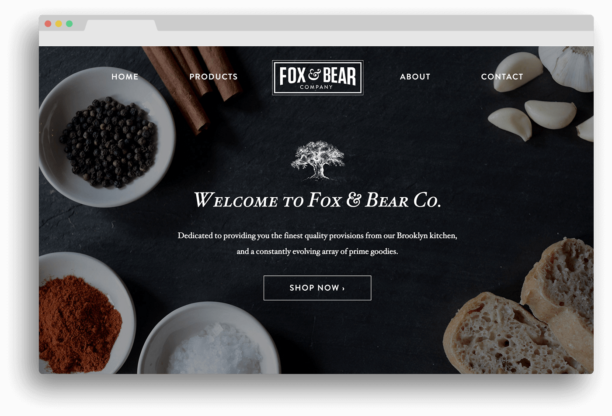

Hi! I’m Kyle Scollin, and I make pretty pictures.
I’m also a team leader, mobile design expert and all-around goof. I like: coffee, cookies, donuts, calligraphy, graffiti, minecraft, and graphic novels. (My fiancé says I should add camping, or hiking or something.)
Copyright 2017 - Kyle Scollin

asdf
asdf